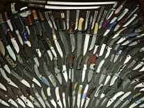

Нож — прежде всего колющий (исходя из этимологии слова), а также рубящий, режущий инструмент, рабочей частью которого является клинок — полоса твёрдого материала (обычно металла) с лезвием на одной или нескольких сторонах. В конструкции, чаще всего, можно выделить клинок и рукоять. У клинка может быть выраженное колющее остриё.
